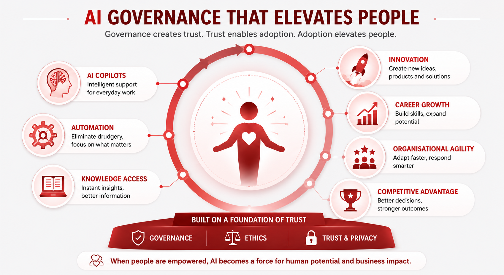

Elevating People, Not Just Managing Risk
Governance without a human elevation strategy is risk management with extra steps. This segment shifts the energy from protection to aspiration — and asks the most strategically important question of the day.

The vocabulary shift
1:35 – 1:42Words shape culture. Governance frameworks that use the language of prohibition create cultures of fear and avoidance. Reframe the vocabulary before you roll out a single policy.
The human-first charter
1:42 – 1:50A human-first charter is a public statement — not a footnote in a policy document. It makes an explicit organisational promise that AI deployment is not a headcount reduction strategy. Without it, every AI initiative triggers the same anxiety in employees.
- AI deployment is explicitly decoupled from headcount reduction. If roles change because of AI, the organisation commits to redeployment and retraining before redundancy — echoing what DBS demonstrated at scale.
- Capacity freed by AI is reinvested in strategic human work. When AI saves hours per week per person, the organisation defines what those hours are redirected toward — not left deliberately vague.
- AI literacy is a recognised and rewarded competency. If the organisation values AI capability but does not reflect it in performance frameworks or job descriptions, the message is incoherent.
- Safe innovation is publicly celebrated. Employees who pioneer approved AI use cases are named, recognised, and held up as examples — not just quietly permitted.
- The 48-hour sandbox exists and is promoted. Any employee who wants to test a new AI tool has a fast, low-friction intake process that takes 5 minutes and returns a decision in 48 hours — removing the structural incentive for shadow behaviour.
Individual reflection
1:50 – 2:00Individual — 90 seconds of silent writing. Ask each person to write down their answer to this:
"If AI gave every person on your team 20% of their time back each week — what would you want them to do with it?"
Then ask pairs to share for 2 minutes. Bring three or four answers to the room.
The debrief question: Are those higher-value activities reflected in your current performance frameworks, job descriptions, or incentive structures? If they are not — that is your next governance problem.
AI governance without a talent elevation strategy is just risk management with extra steps. The organisations that get this right will not just reduce risk. They will attract, develop, and keep better people.

The hardest questions of the session
The final segment is about what you leave the room with. A vetted tools directory to reduce shadow AI immediately. A one-page governance reference card your team can use Monday morning. And a personal commitment you will tell someone about by Friday.